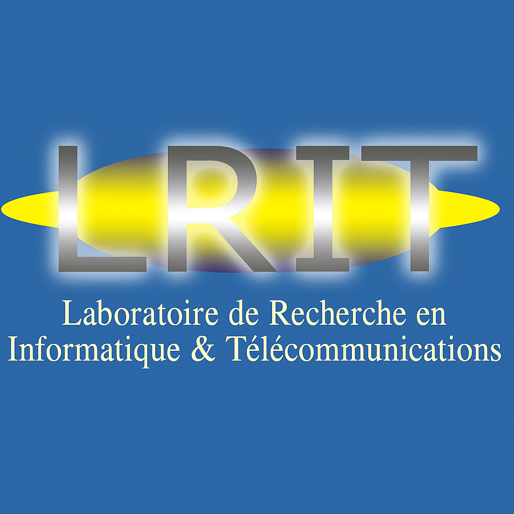

Skip to content

MOHAMMED V UNIVERSITY IN RABAT
Faculty of Sciences of Rabat
LRIT
.
COMPUTER SCIENCE & TELECOMMUNICATIONS
The laboratory
About and history
Members
Why join LRIT?
Contact
Research
Research areas
Publications
Defended theses and research habilitations
Impact and partnerships
Organised events
Projects and collaborations
Awards and honours
Education
Doctoral training
Scholarships
Master IT
Former programmes
FR
Home
/
Directory
Individual profile
Loading profile…
Enable JavaScript to view this profile.
LRIT / EXPLORE
×